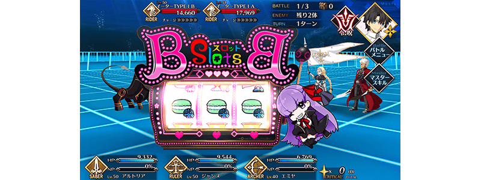
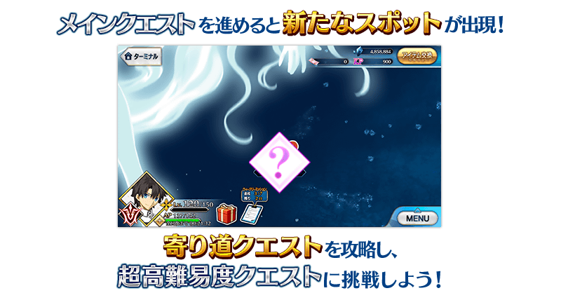
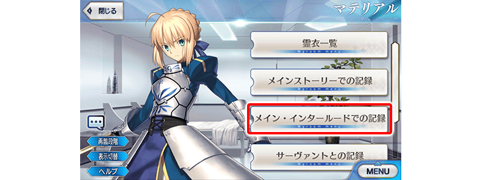

舉辦『「Main Interlude 深海電腦樂土 SE.RA.PH」發佈記念宣傳活動』！
◆舉辦期間◆
2020年7月15日(三) 17:00～7月22日(三) 11:59
※本頁面皆為開發中圖片。會有與實際圖片相異的情況。

特別開放「Main Interlude 深海電腦樂土 SE.RA.PH」！
開放「Main Interlude 深海電腦樂土 SE.RA.PH」。
本次特別向滿足關卡開放條件的各位全員以期間限定開放！
特別開放期間結束後，在達文西工房的「稀有稜鏡交換」追加「Main Interlude 深海電腦樂土 SE.RA.PH」的關卡開放權，交換後變得可遊玩「Main Interlude 深海電腦樂土 SE.RA.PH」。
※在「稀有稜鏡交換」追加的「Main Interlude 深海電腦樂土 SE.RA.PH」關卡開放權為永久，沒有交換期限。 ※就算在特別開放期間中通過「Main Interlude 深海電腦樂土 SE.RA.PH」的情況，也能在「稀有稜鏡交換」購入關卡開放權。 ※在特別開放期間中通過所有關卡的情況，可反覆挑戰不獲得報酬的一部份已通過關卡。
◆關卡開放條件◆
通過「終局特異點」的御主對象
※不需要通過亞種特異點(從Ⅰ到Ⅳ)及第2部序幕(プロローグ)「序」以後的主線關卡。
◆特別開放期間◆
2020年7月15日(三) 17:00～7月22日(三) 11:59
◆關卡的開放期間◆
享受主線關卡將以下表的時間表開放。
| 關卡的種類 | 開放期間 |
|---|---|
| 主線關卡第一幕 |
2020年7月15日(三) 17:00～ 7月22日(三) 11:59 |
| 主線關卡第二幕 |
2020年7月16日(四) 17:00～ 7月22日(三) 11:59 |
| 主線關卡第三幕 |
2020年7月17日(五) 17:00～ 7月22日(三) 11:59 |
| 主線關卡第四幕～終幕 |
2020年7月18日(六) 17:00～ 7月22日(三) 11:59 |
| 主線關卡後半 |
2020年7月19日(日) 17:00～ 7月22日(三) 11:59 |
◆有關「Main Interlude 深海電腦樂土 SE.RA.PH」的注意◆
※就算已經通過下述期間限定活動的情況也可遊玩。
・Fate/EXTRA CCC×Fate/Grand Order 特別活動「深海電腦樂土 SE.RA.PH」
・特別活動「復刻版:深海電腦樂土 SE.RA.PH -Second Ballet-」
※故事與「復刻版:深海電腦樂土 SE.RA.PH -Second Ballet-」同樣內容。
※在過去舉辦的「深海電腦樂土 SE.RA.PH」「復刻版:深海電腦樂土 SE.RA.PH -Second Ballet-」獲得過「聖杯」的情況，「Main Interlude 深海電腦樂土 SE.RA.PH」中會以「傳承結晶」代替「聖杯」做為通過報酬。
※無法獲得一部份道具。
※在關卡的進行必須的一部份道具可消耗QP來獲得。
※在關卡通過時可獲得的戦利品及關卡通過報酬與過去舉辦的「深海電腦樂土 SE.RA.PH」報酬不同。
※無法遊玩自由關卡等一部份的關卡。
※適用的支援編成為設定在「平常關卡」。

關於「Main Interlude 深海電腦樂土 SE.RA.PH」加入從者
「★4(SR)BB」會在通過「Main Interlude 深海電腦樂土 SE.RA.PH」的主線關卡「終幕」後加入。
還有，「★4(SR)BB」的靈基再臨必要道具「回憶的緞帶」，可藉由推進後半主線關卡入手。
※「BB(SR·MoonCancer)【寶具強化用】」預定自2020年7月22日(三) 17:00追加到達文西工房的「稀有稜鏡交換」。交換1位需要2個稀有稜鏡。還有，在已經可強化「★4(SR)BB」到寶具等級5狀況的情況，無法交換。 ※在通過「Main Interlude 深海電腦樂土 SE.RA.PH」通過時時入手「累計第6位以後」的「★4(SR)BB」入手的話的話，贈送稀有稜鏡1個到禮物箱。
關於「BB拉霸」
主線關卡中，在戰鬥開始時會有「BB拉霸」啟動的情況。
BB拉霸會對應隨機轉到的圖案，在戰鬥賦予各式各樣的效果。

關於繞路關卡的發生
推進「Main Interlude 深海電腦樂土 SE.RA.PH」主線關卡第一幕的話，「復刻版:深海電腦樂土 SE.RA.PH -Second Ballet-」會出現享受追加劇本的繞路關卡。關卡在通過的話會開放下1個，最後開放超高難易度關卡。
攻略所有的關卡，得到特別的報酬吧！
※繞路關卡中，在戰鬥開始時不會發生「BB拉霸」。
◆關卡開放時間◆
2020年7月15日(三) 17:00～
◆關卡開放條件◆
通過「Main Interlude 深海電腦樂土 SE.RA.PH」主線關卡第一幕至特定的進行度

得到活動限定概念禮裝EXP卡「BBショット！」吧！

做為「Main Interlude 深海電腦樂土 SE.RA.PH」的報酬，可入手能大幅強化概念禮裝大幅的EXP卡！ 無論如何請藉此機會，強化中意的概念禮裝！
★4(SR)BB強化時的獲得經驗值2倍！
下述的期間中，強化「★4(SR)BB」時的獲得經驗值變成2倍。
◆舉辦期間◆
2020年7月15日(三) 17:00～7月22日(三) 11:59

介紹「★4(SR)BB」的寶具演出！
介紹「★4(SR)BB」的寶具演出！
在「Fate/Grand Order」官方網站內的公告中，以影片公開寶具演出，敬請確認。
「Main Interlude 深海電腦樂土 SE.RA.PH」關卡開放權與 「BB(SR·MoonCancer)【寶具強化用】」永久追加！
自2020年7月22日(三) 17:00，在達文西工房的「稀有稜鏡交換」永久追加「Main Interlude 深海電腦樂土 SE.RA.PH」的關卡開放權。
在特別開放期間結束後交換關卡開放權就可遊玩「Main Interlude 深海電腦樂土 SE.RA.PH」。
並且，以通過「Main Interlude 深海電腦樂土 SE.RA.PH」的各位做為對象也永久追加「BB(SR·MoonCancer)【寶具強化用】」到達文西工房的「稀有稜鏡交換」。
◆能交換關卡開放權條件◆
通過「終局特異點」的御主對象
※不需要通過亞種特異點(從Ⅰ到Ⅳ)及第2部序幕(プロローグ)「序」以後的主線關卡。
◆能交換「BB(SR·MoonCancer)【寶具強化用】」條件◆
通過「Main Interlude 深海電腦樂土 SE.RA.PH」的御主對象
◆追加時間◆
2020年7月22日(三) 17:00～(預定)
◆追加道具(永久)◆
| 追加道具 | 能交換次數 | 1次交換所需的 稀有稜鏡數 |
|---|---|---|
| 「Main Interlude 深海電腦樂土 SE.RA.PH」關卡開放權 | 1次 | 5個 |
| BB(SR·MoonCancer)【寶具強化用】 | 4次 | 2個 |
※在「稀有稜鏡交換」追加的「Main Interlude 深海電腦樂土 SE.RA.PH」關卡開放權及「BB(SR·MoonCancer)【寶具強化用】」為永久，沒有交換期限。 ※就算在特別開放期間中通過「Main Interlude 深海電腦樂土 SE.RA.PH」的情況，也能在「稀有稜鏡交換」購入關卡開放權。 ※在特別開放期間中通過所有關卡的情況，可反覆挑戰不獲得報酬的一部份已通過關卡。 ※特別開放期間中的「Main Interlude 深海電腦樂土 SE.RA.PH」推進至中途的情況，交換「Main Interlude 深海電腦樂土 SE.RA.PH」關卡開放權的話，會繼承在特別開放期間中推進的關卡進行狀況。 ※已經有可強化「★4(SR)BB」至寶具等級5的情況，無法交換「BB(SR·MoonCancer)【寶具強化用】」。 ※就算於「稀有稜鏡交換」入手「累計第6位以後」「★4(SR)BB」，也無法入手稀有稜鏡。

強化「★5(SSR)帝王花」「★5(SSR)Meltryllis」「★4(SR)鈴鹿御前」的特別關卡「從者強化關卡」，在迦勒底之門永久追加。
不僅進行對象從者的強化，也可獲得聖晶石做為關卡通過報酬。
※請注意在從者強化關卡沒有文字冒險部份。
◆追加時間◆
2020年7月15日(三) 17:00～
◆開放條件◆
持有的強化對象從者，必須使其最終再臨。
※未持有對象從者的話，不會出現關卡。
※關卡沒有舉辦期限。


下述的期間中，主線關卡第1部的消耗AP變成1/4！(就算在戰鬥中撤退的情況也會是同様的消耗量)
尚未通過主線關卡第1部的御主，請務必活用此機會！
◆舉辦期間◆
2020年7月15日(三) 17:00～7月22日(三) 11:59
◆對象關卡◆
主線關卡第1部(從特異點F到終局特異點)
※目前在主線關卡第2部 第3章以前的AP消耗量是永久變成1/2的狀態。因此，宣傳活動結束後，該主線關卡的AP消耗量會變成1/2 ※請注意亞種特異點(從Ⅰ到Ⅳ)、自由關卡為對象外。
介紹在2020年7月15日(三)的維修後反映的更新內容之中代表性的內容。
◆追加時間◆
2020年7月15日(三) 17:00
在圖鑑(マテリアル)追加「Main Interlude中的記錄」
在個人空間(マイルーム)的圖鑑(マテリアル)追加「Main Interlude中的記錄」。
※與Main Interlude同樣內容的「活動關卡中的記錄」，今後變得也可於「Main Interlude中的記錄」確認。

其他還有，期間限定『「Main Interlude 深海電腦樂土 SE.RA.PH」發佈記念Pick Up召喚(每日交替)』同時舉辦！
關於詳情，請自下述橫幅確認。
■「Main Interlude 深海電腦樂土 SE.RA.PH」發佈記念Pick Up召喚(每日交替)詳細情報